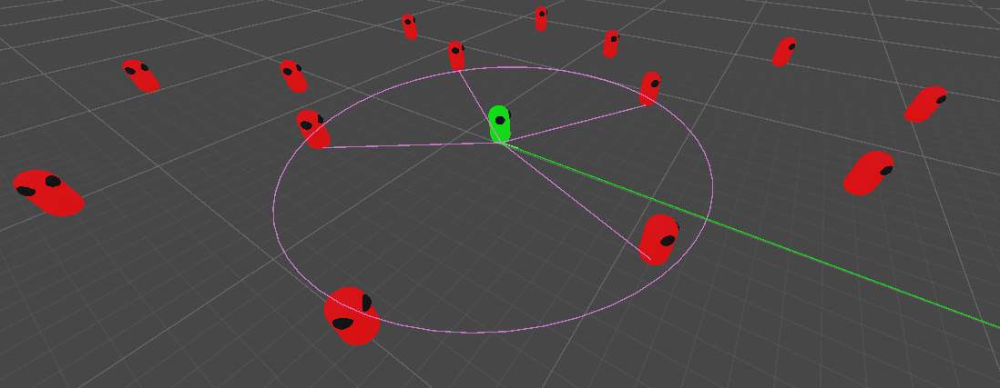

Movement
Movements control how agents move through the world. For setting movement behaviours on agents, see the movement section of the agents documentation.

Configuration
A KaijuMovementConfiguration ScriptableObject can be assigned to an agent to control the default parameters of the various movement behaviours. To create a KaijuMovementConfiguration, right click in the project window and go to "Create > Kaiju Solutions > Agents > Kaiju Movement Configuration" and name the file. Then, assign it to your agent in the inspector.
Types
The following movement types are provided with Kaiju Agents. Each has corresponding methods on agent to perform the given movement.
Seek
Move directly towards a target. It is the inverse of flee.
Pursue
Moves towards a target's calculated future position based on extrapolating where it will be in the future given its current and past position. The movement towards this calculated future position is the same as a seek movement. It is the inverse of evade.
Flee
Move directly away from a target. It is the inverse of seek.
Evade
Moves away from a target's calculated future position based on extrapolating where it will be in the future given its current and past position. The movement away from this calculated future position is the same as a flee movement. It is the inverse of pursue.
Wander
This will randomly move the agent based on choosing a random point along a circle's circumference which is projected a given distance ahead of it. This movement towards the random point is the same as seek.
Separation
Separation aims to maintain a radius of space from other agents. A position based on all other agents currently currently within its separation radius is calculated at which point a weighted seek is performed to reach it.
Obstacle Avoidance
Obstacle avoidance casts rays to detect obstacles. If one is detected, the normal of the closest ray is used to calculate a point away from the obstacle for the agent to seek to.
Path Following
Path following calculates a path towards a target and the performs subsequent seek movements on each point along the path. This requires navigation data to be baked in the world. To learn more, see the Unity AI navigation documentation.
Path following and the FindPath extensions use Unity’s NavWorld to locate nearby endpoints on the baked surface. Two points on the same polygon can be joined directly. For longer routes Unity calculates the path corners, including turns and navigation links. Pass a NavMeshQueryFilter to select the baked agent type, allowed areas and traversal costs. Supplying a string-pulling radius also enables the physics line-of-sight shortcut before the mesh query.
Walking between floors
Call PathFollow(Vector3) on a Kaiju Navigation Agent for a surface-constrained route. Bake connected walkable surfaces for that agent type. Connect separate floors with a NavMesh link where the agent may actually cross. The component's Surface Snap Distance limits the distance between the requested destination and the baked surface. A destination with no complete route leaves the agent waiting. Inspect HasCompleteSurfaceRoute, change the target or call the movement's CalculatePath() after changing the navigation data.
The native NavMeshAgent owns translation and link traversal while following the route. Its auto-traverse setting controls automatic link crossing. Projects with a custom traversal animation can complete the link through Unity's NavMeshAgent. Give the agent one surface route at a time. The Vector2 path-follow overload keeps planar steering and blending. The general-purpose FindPath extensions and Transform-agent path movements retain their direct fallback for off-mesh targets.
Free flight
Add Free Flight to a GameObject with a Kaiju Transform Agent or Kaiju Rigidbody Agent. Use agent.Seek(worldPoint) for a destination, agent.Pursue(target) for a moving target, or agent.Control3 = Vector3.up for continuous ascent. A Vector2 seek steers horizontally at the current altitude. The XYZ speed limit also applies on diagonals. Free Flight keeps automatic facing level unless Pitch To Velocity is enabled. It suspends Rigidbody gravity and the vertical position constraint while active.
For a patrol, author world-space waypoints and seek the next when the previous movement finishes. Use agent.FreeFlight.HasClearance(destination, radius, obstacles) to test a straight segment against solid colliders. Select obstacle layers that exclude the drone itself. A Transform agent can pass through obstacles if you command it directly. For routes around obstacles, supply safe waypoints. Import Floors and Flight in Package Manager for the Two Storeys and Open Air Patrol scenes. Open either scene and press Play. The scene creates its demonstration geometry on startup. Select the scene root to edit the patrol waypoints.
For an entity-only flyer, use LocalTransform and KaijuFlightSteering. Set DesiredVelocity and MaxSpeed before the fixed step. Add a KaijuFlightInput buffer to blend world-space velocities, seek targets or flee targets. Use one steering component per entity. Planar agents continue using KaijuSteering and KaijuMovementInput.
Enable Spatial Vision to measure spherical distance and use a 3D view cone on vision sensors. ECS agents can use KaijuSphericalRangeSensor for spherical detection independently of their movement type. Existing range sensors use XZ. With ML-Agents installed, Include Climb appends Y after the existing X and Z velocity observations or control actions. Choose the corresponding three-channel model before starting training or inference.
Preferences
To change the colors of movement visualizations, from the top menu, go to Edit > Project Settings and select Kaiju Agents.
For a strict route query without moving an agent, use the main-thread TryFindSurfacePath Vector3 extension. Supply a NavMeshQueryFilter, snap distance, reusable NavMeshPath, and caller-owned corner array by reference. The return value is true only for a complete route. Inspect the status for a partial, invalid, or unmapped result and read only the returned corner count. The general FindPath helpers retain their direct-steering fallback.